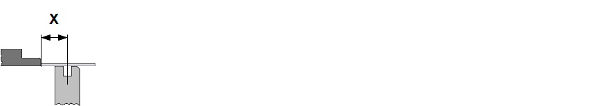

{kind=link}
Use this tab to correct the backgauges. Backgauge corrections are divided into the following sections:
In this section you can correct the position of the rear backgauge fingers. You can move the rear backgauge fingers forward or backward to the bend line.
- XB absolute
- XB relative
This option is used to correct the setting for the distance from the selected backgauge point to the center of the bottom tool. The adjustment can be made separately for the left-hand (XB1) axis and right-hand (XB2) axis, or jointly for both axes as a group.

Fine adjustment of the value entered for the axis position.
In this section you can move the position of the rear backgauges to the right or left.
- ZB absolute
- ZB relative
Use this option to correct the distance from the reference point of the respective backgauge finger to the left-hand outer edge of the press table.
Fine adjustment of the value entered for the axis position.
In this dialog box you can move the position of the rear back gauges vertically up or down.
- RB absolute
- RB relative
This option is used to correct the setting for the distance from the selected backgauge point relative to the bottom tool.
Fine adjustment of the value entered for the axis position.
In this section you can correct the Start retraction and Start peripherals and Speed parameters for the backgauges.
- Start retraction
- End position
- On the fly
- Start peripherals
-
CAUTION:
It is possible for moving peripherals axes to push the bending part towards the operator causing injury. Certain precautions must be taken with regard to handling the bending part when correcting the peripheral axes.
For bending parts that have long sides extending behind the bending tool, the Delay option should be used to pass control to the operator for actuating movement of the peripherals axes.
- Delay
- Upper dead center
- Pinching point
- Speed
Retraction Retraction refers to the backwards movement of the backgauge arm that is required to avoid the backgauge finger colliding with the bending part. Retraction is performed once the bending part has been clamped between top and bottom tools. makes the backgauge X-axes draw back. Two positions are available.
The upper beam waits at the pinching point until the X-axes have reached the position.
The upper beam stops briefly at the pinching point, but then the X-axes and the upper beam continue their movement simultaneously.
This option defines when the peripheral axes can start moving.
The peripheral axes will only start moving after an action by the operator (confirmation e.g. using pedal).
When the upper beam reaches the top dead center, the peripherals axes will start moving to the next programmed position.
Once the upper beam passes the pinching point during its upward travel, the peripherals axes will start moving already to the next programmed position.
This option defines the travel speed of the axes in percent.